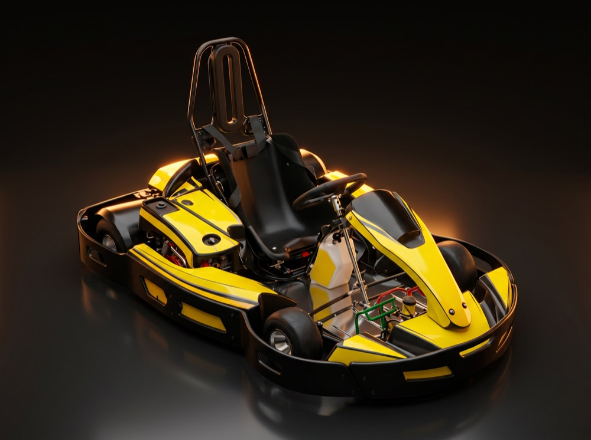
JUNIOR
Per a la canalla de 7 a 12 anys
6
—
Pirineu de Lleida · a 15 min d'Andorra
El circuit de karting a l'aire lliure més llarg de Catalunya. Del primer kart als 7 anys al Rotax de 30 CV. Reserva la teva tanda i baixa a pista.
Aquí corres a l'aire lliure, entre muntanyes i vora el riu, sobre un traçat de veritat: una zona ràpida per deixar anar el peu i una zona tècnica que separa els valents dels ràpids. Et posem casc, granota i guants. La resta la poses tu.
Zona ràpida + zona tècnica
1.400 m que premien frenada tardana i traçada neta.
Cronometratge professional
Doble banda compatible amb Alfano i MyChron. La teva volta ràpida, mesurada.
Seguretat de federació
Proteccions i zones d'escapatòria a tots els traçats.
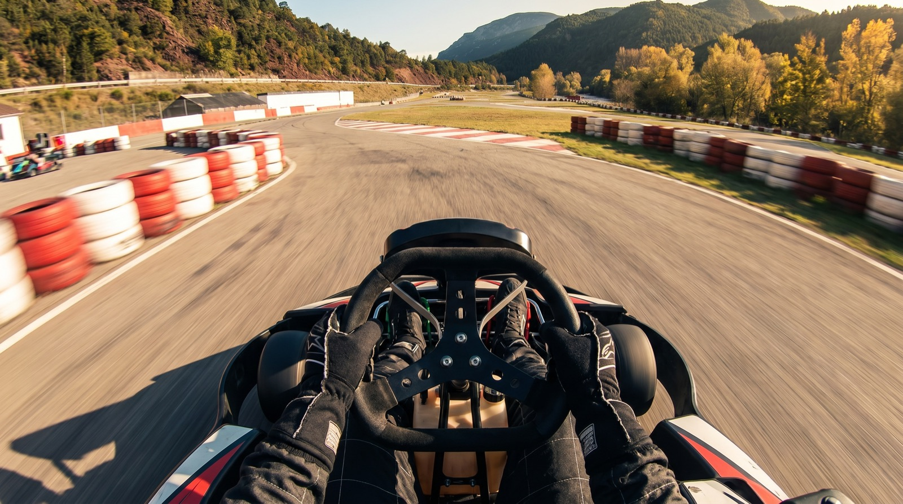
1 tanda = 10 minuts a pista. Com més tandes reserves, més barata et surt cadascuna. Preus per persona, equip de seguretat inclòs.

Per a la canalla de 7 a 12 anys
6
—
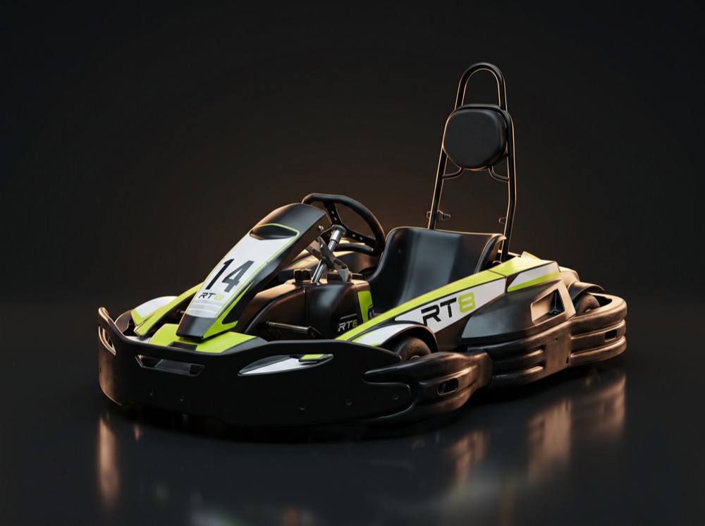
+12 anys i adults
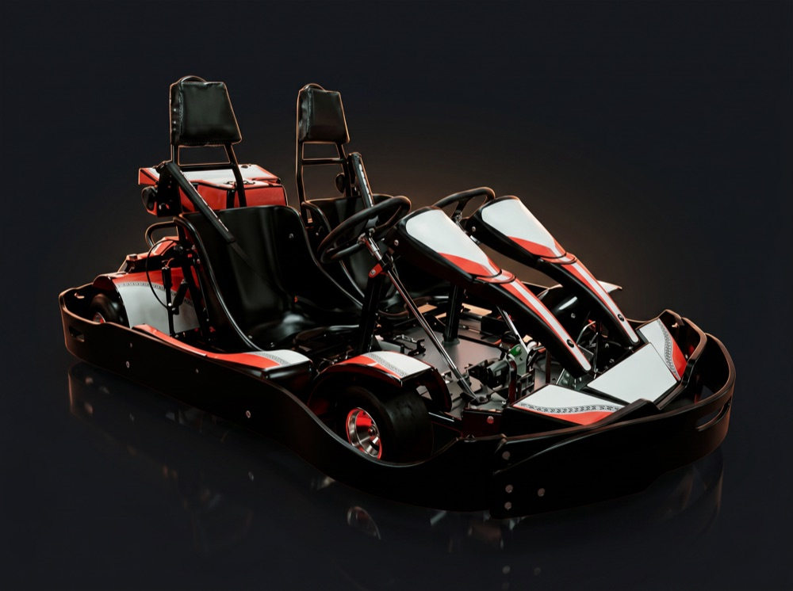
2 adults, o adult + nen (≥130 cm)
6
—
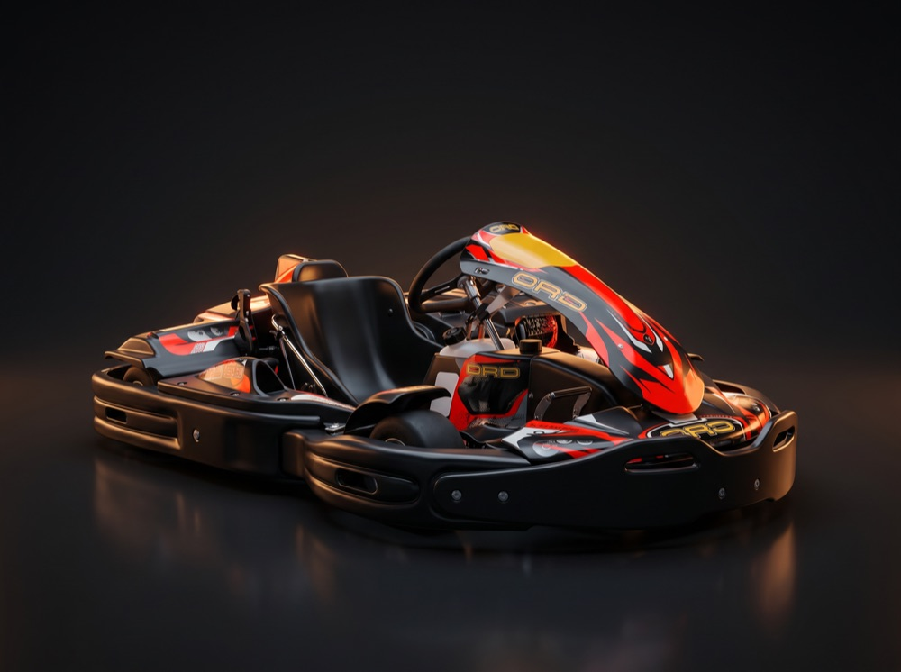
+16 anys · el salt a la velocitat
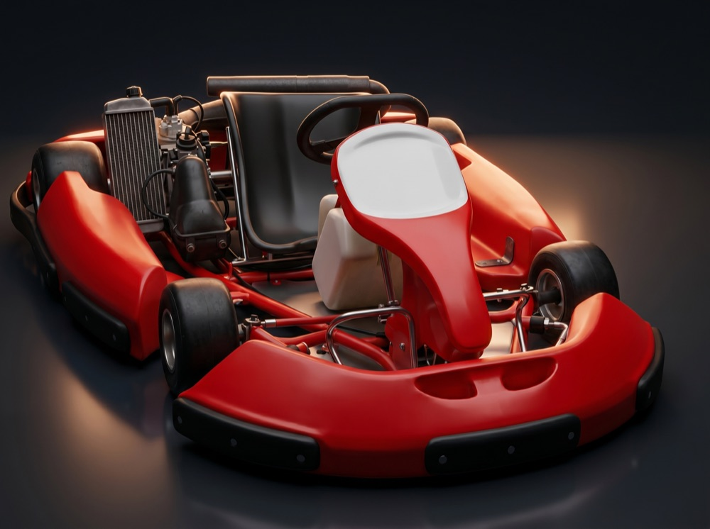
Adults amb experiència
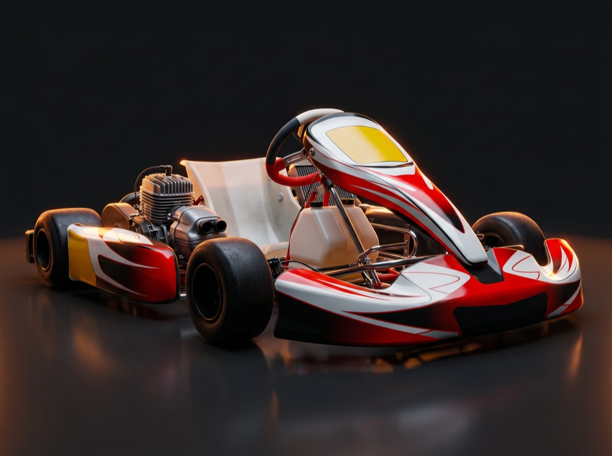
Només nivell alt · el més bèstia
Grup, aniversari o esdeveniment d'empresa? Tenim flota Fórmula per a curses de grup. Escriu-nos i ho muntem.
Super Motard i PitBikes sobre el mateix traçat, amb +250 m de terra enllaçable. Equip (granota + casc) per 20€.
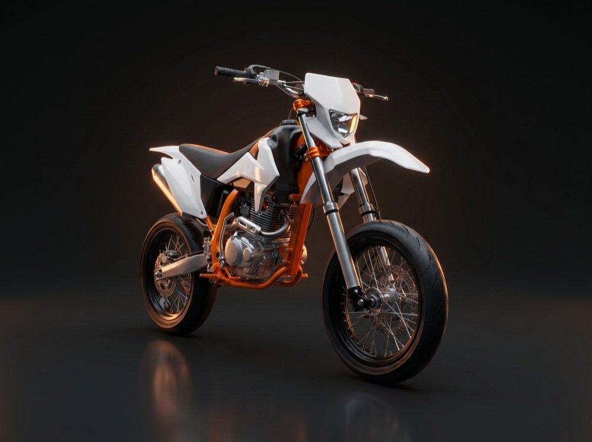
IMR SK1 250cc · tanda de 15 min
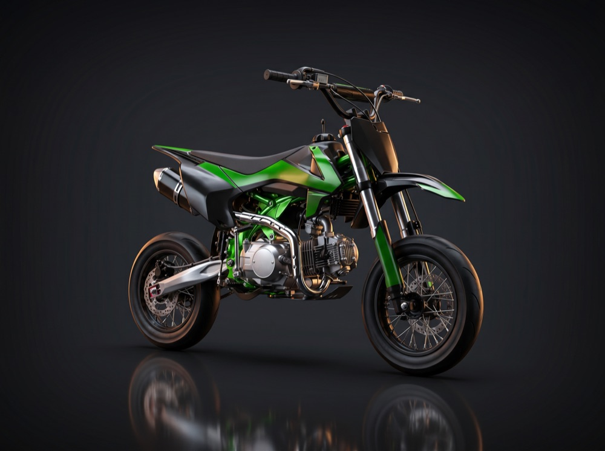
PGR Arrow 125 · tanda de 10 min
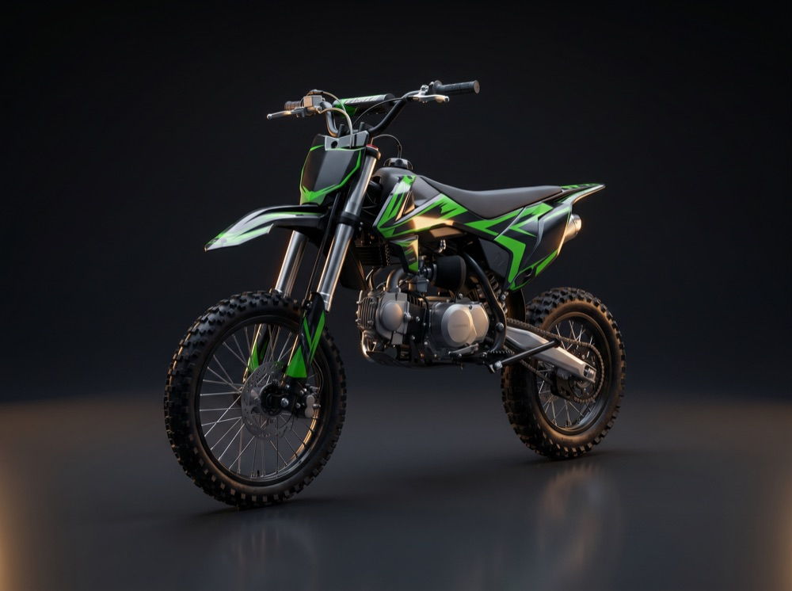
PGR Arrow 125 · tanda de 10 min
Tiquet de pista amb taller, aigua, llum i aire inclosos. Porta el teu vehicle i roda al teu ritme.
4 hores
35€
Dia complet
60€
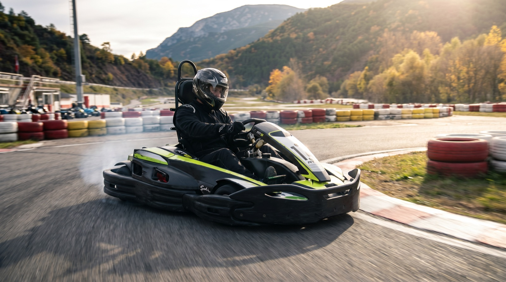
DEU MINUTS QUE NO S'OBLIDEN
Munta la teva reserva4,2
Opinions reals a Google
El Pla de Sant Tirs (Lleida)
"Un dels millors circuits on he rodat. Té una zona ràpida per deixar-te anar i una altra de molt tècnica que enganxa. Hi tornarem segur."
Marc V.
Local Guide · fa 3 setmanes
"El tracte del personal és de 10, et fan sentir de la família. Vam anar amb nens i adults i hi havia kart per a cadascú. L'entorn, espectacular."
Patrícia R.
fa 1 mes
"Circuit llarg de veritat i a 15 min d'Andorra, una passada de lloc. Dies de molta gent toca esperar entre tandes, però la conducció ho val."
Jordi S.
fa 2 mesos
Una tanda són 10 minuts a pista, a fons. Les de Super Motard duren 15 minuts. Com més tandes reserves de cop, més barata surt cadascuna.
Sí. El kart Junior és per a la canalla de 7 a 12 anys. I si vols anar amb un adult, el SuperBi és biplaça (el nen ha de fer com a mínim 130 cm).
No per al Junior, Super Kart, SuperBi ni Racing: t'expliquem el bàsic i a pista. Els karts de Competició i Súper Competició (Rotax) sí que demanen experiència i un bon nivell.
Nosaltres et donem casc, sotacasc, granota i guants. Tu vine amb roba còmoda i sabata tancada. Si plou, tenim granotes impermeables: aquí es roda igual.
És clar. Tens tiquet de pista de 4 hores (35€) o de dia complet (60€), amb taller, aigua, llum i aire inclosos. També hi ha nau de pupil·latge si vols deixar-hi el vehicle.
Sí. Muntem curses de grup amb cronometratge i tenim flota Fórmula pensada per a esdeveniments. Escriu-nos per WhatsApp i et preparem una proposta a mida.
Obrim cada dia de 10:00 a 19:00 (i fins a les 22:00 amb cita prèvia). Caps de setmana i festius et recomanem reservar per WhatsApp per assegurar la tanda i evitar esperes.
A la carretera C-14, km 174, al Pla de Sant Tirs (Lleida), en ple Pirineu i a només 15 minuts d'Andorra. Tens el mapa i la ruta més avall.
Reserva la teva tanda per WhatsApp en 30 segons. Et confirmem hora i kart a l'instant.